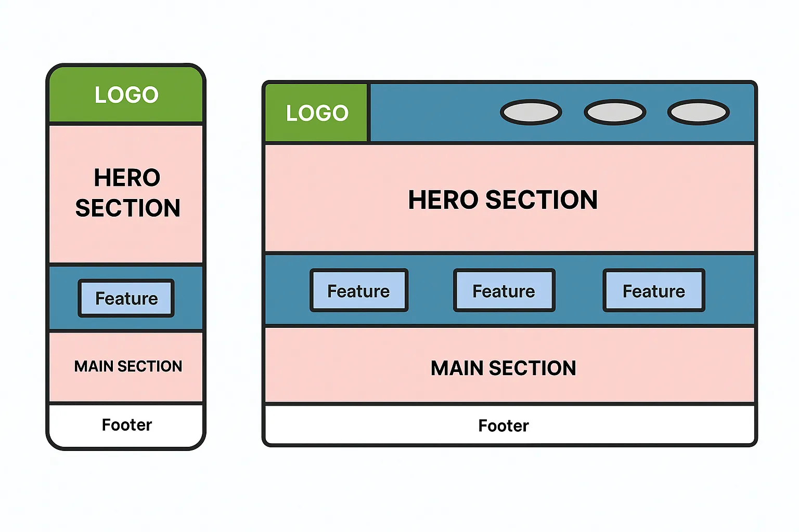

1. Site Name
Dragon Ball Universe – This site focuses on Dragon Ball history, characters, sagas, and visuals for fans of the anime and manga series. Optional domain: dragonball-universe.net
2. Site Purpose
The purpose of this site is to offer fans a fun and informative guide to the Dragon Ball world, including series history, character bios, saga explanations, and a timeline of important events.
3. Scenarios
- In what order should I watch the Dragon Ball series?
- Which saga introduces Ultra Instinct?
- Who are the strongest characters in Dragon Ball?
4. Color Scheme
Primary Color: #FFCC00 (Super Saiyan yellow)
Secondary Color: #1C1C1C (deep black/gray for contrast)
Accent: #E60012 (Goku’s outfit red)
5. Typography
Heading Font: Roboto Bold
Body Font: Roboto Regular
Loaded via Google Fonts.
6. Wireframe
Below is the basic wireframe layout for the homepage for mobile and desktop.
Welcome to Dragon Ball Universe
This website is a tribute to the Dragon Ball series. Discover the history, characters, sagas, and fun facts that have made this anime a global phenomenon.
Dragon Ball Timeline
- Dragon Ball – The beginning of Goku's journey.
- Dragon Ball Z – Saiyans, Frieza, Cell, Majin Buu and more.
- Dragon Ball GT – A side sequel exploring new transformations.
- Dragon Ball Super – Gods, Multiverse, and Ultra Instinct!
Main Characters
- Goku
- Vegeta
- Gohan
- Bulma
- Piccolo
- Frieza
Image Gallery